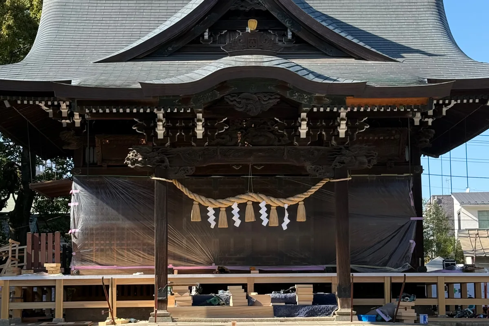
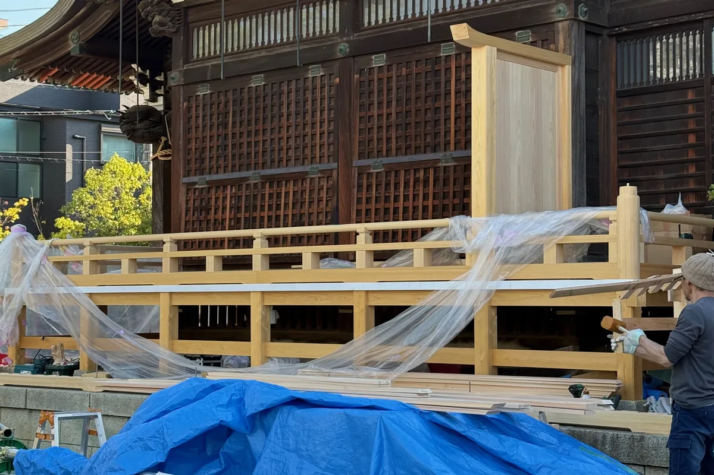
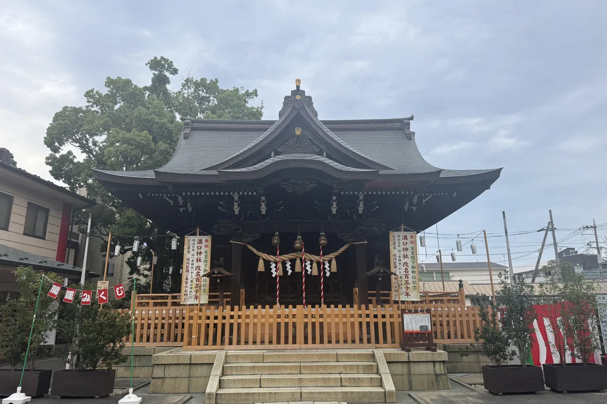
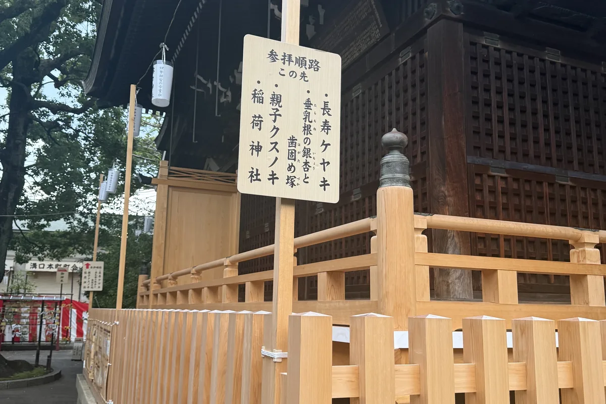

天皇陛下御即位並びに
溝口神社改名150年記念事業
当溝口神社は、江戸時代まで赤城明神を祀っていたことから、一般には赤城様と呼ばれ親しまれておりました。明治初頭には、神仏分離の法により御神体を伊勢の神宮より新たに奉迎し、社名を溝口神社と改めました。更に明治6年（1873）幣帛共進村社に指定され、川崎市内でも最も由緒のある神社の一つとして広く尊崇をあつめ、常に地域の社会融和のシンボルとして、また「心のふるさと」として、郷土発展の歴史と歩みを共にして参りました。
そして今日では、正月の参詣を始め秋の祭禮などを通し、年間20万人余りの多くの氏子崇敬者の信仰を集めております。
さて現在の本殿は、昭和9年（1934）11月に造営、平成18年には本殿改修事業を実施し、社殿屋根葺き替え工事を始め境内整備工事を行いましたが、幣殿・拝殿の床、拝殿浜縁（回廊）は昭和9年造営当時のままであり、劣化が進んだ状態であります。また、手水舎は大正天皇御即位記念として再建されましたが、大正12年（1923）9月の関東大震災で倒壊し、昭和2年（1927）に再度建立され現在に至っておりますが、老朽化が著しく倒壊の危険がある為使用できない状況であります。更に、参道の石鳥居は、安永8年（1779）に奉納された鳥居が関東大震災により倒壊した為、大正15年（1926）9月に再建されたものでありますが、石造りであることから耐震性が不十分な為、地震などの影響で倒壊が懸念されております。
そこで今般、幣殿・拝殿、手水舎、石鳥居の現状を専門業者に調査を依頼し、その結果を鑑み乍ら昨今改修工事の審議検討を重ねて参りました。
折しも天皇陛下が御即位され「令和」の御代となり、令和6年には旧「赤城社」より「溝口神社」へ改名をして150年を迎えます。「天皇陛下御即位並びに溝口神社改名150年記念事業」と言挙げて、懸案事項であります社殿浜縁（回廊）・床下補強工事、手水舎改修、大鳥居新設建立を行い、愈々御神徳を宣揚し、氏子崇敬者子々孫々に至るまでのご加護を祈念申し上げ、是まで当社を支えて下さいました皆様方の思いを後世に伝えるべく、役員総代有志一同発起し、「天皇陛下御即位並びに溝口神社改名150年記念事業実行委員会」を設立する運びとなりました。
平素より、溝口神社を崇敬いただいております皆様方におかれましては、多難の時勢にて諸般なにかと厳しき折、洵に恐縮に存じますが、何卒ご理解を賜り、改修工事にご奉賛下さいますよう心よりお願い申し上げます。
事業の概要
- 工事計画
- ①奉賛金の募集
②社殿耐震工事・床下補強
③手水舎改修工事・手水舎建替・周辺整備（工事終了）
④参道大鳥居建立工事
⑤その他関連事業 - 工事期間
- 着工予定…令和7年2月中旬以降
竣工予定…令和9年8月 - 概要予算
- 金、約6500万円
- 設計・施工
- 設計会社―株式会社シティー設計
施工会社―株式会社石本興業
奉賛のお願い
奉賛金 3万円からのお納めをお願いいたします。（分納で納めることもできます）
奉賛期間 令和6年9月8日より令和9年9月まで
※納金方法等詳細は、溝口神社社務所までお問い合わせください。044-822-3776
※工期延長に伴い、奉納期間を延長いたしました。ご理解ご協力の程、お願い申し上げます。
工事の歩み
手水舎改修工事 竣工（令和7年5月9日）
（令和7年5月の竣工報告より）
平素より、溝口神社を崇敬いただいております皆様方におかれましては、多難の時勢にて諸般なにかと厳しき折、改修工事にご奉賛賜りまして誠にありがとうございます。
令和7年5月9日に手水舎改修工事が終了いたしましたことをご報告させていただきます。
また、本殿耐震工事を始め、他の事業に関しましても引き続き継続して参りますので、ご理解ご協力をお願い申し上げます。
社殿耐震・浜縁（回廊）改修工事 竣工
社殿の耐震補強と浜縁（回廊）の改修工事は、皆様のご奉賛により無事に竣工いたしました。施工中の記録とともに、改修を終えた現在の姿をご紹介します。
改修前・工事中


竣工後


皆様への御礼と今後の整備
ご奉賛いただきました皆様に、心より御礼申し上げます。
参道大鳥居建立工事など、記念事業の残る整備につきましては、決まり次第このページとお知らせ欄でご案内いたします。
溝口神社 本殿改修実行委員会
| 宮司 | 鈴木敬一 |
|---|---|
| 実行委員長 | 太田文雄 |
| 仝副委員長 | 秋元英樹、小竹正美、星野憲司、村田浩一、島﨑光順、鈴木勝夫、河西良則、関口能長、北川勝敏、土屋良直、境野勝之、持田知介 |
| 仝会計 | （会計）持田知介／（副会計）村田浩一 |
| 仝監査 | 鈴木勝夫、小竹正美 |